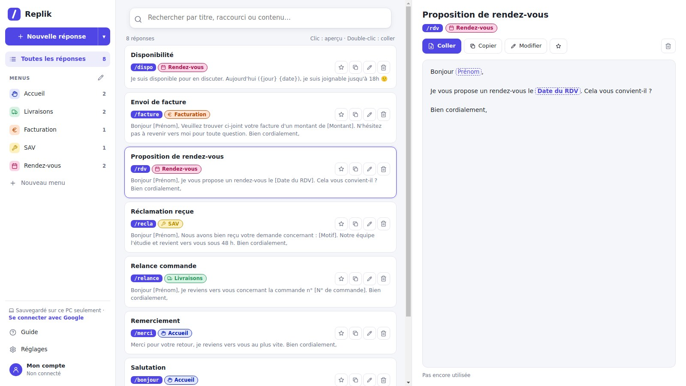
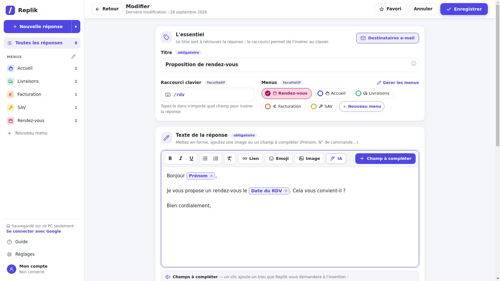

Tapez /rdv dans Outlook, Teams, Gmail, Slack ou votre logiciel métier : le message complet apparaît, sans faute et sans oubli.
Windows 10 et 11 · Extension pour Google Chrome

Replik s'occupe du texte qui revient tous les jours. Vous gardez votre temps pour ce qui compte.
Outlook, Teams, Gmail, Slack, WhatsApp, Word, votre logiciel métier : un seul raccourci, dans toutes les applications.
Replik demande seulement ce qui change : prénom, immatriculation, date. Un aperçu s'affiche avant de coller.
Adresses, motifs, contacts : un clic et c'est rempli. Choisissez l'adresse, la ville suit toute seule.
Ctrl + Espace depuis n'importe quelle application, ou tapez « / » pour voir vos réponses en suggestion.
Vos réponses restent sur votre ordinateur, sauvegardées dans votre propre Google Drive. Aucun serveur ne les stocke.
Partagez vos réponses entre collègues en un fichier : elles s'ajoutent aux leurs, sans rien écraser.
Un exemple concret : demander un rendez-vous à un garage.
Dans votre e-mail, tapez /rdv. Replik reconnaît la réponse.
Prénom, immatriculation, adresse, date : une petite fenêtre vous demande l'essentiel, avec l'aperçu.
Le message complet est inséré, bien écrit, sans faute de frappe ni information oubliée.
Écrivez votre texte, ajoutez les champs à compléter en un clic, rangez-le dans un menu en couleur. C'est prêt.

Vous souhaitez l'utiliser dans votre équipe ? Écrivez-nous, nous vous envoyons le lien d'installation.